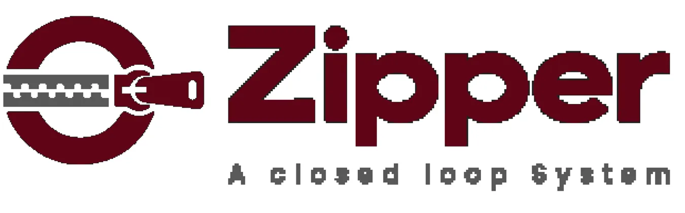
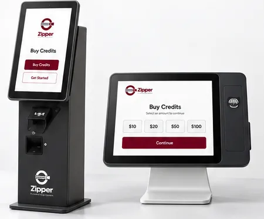
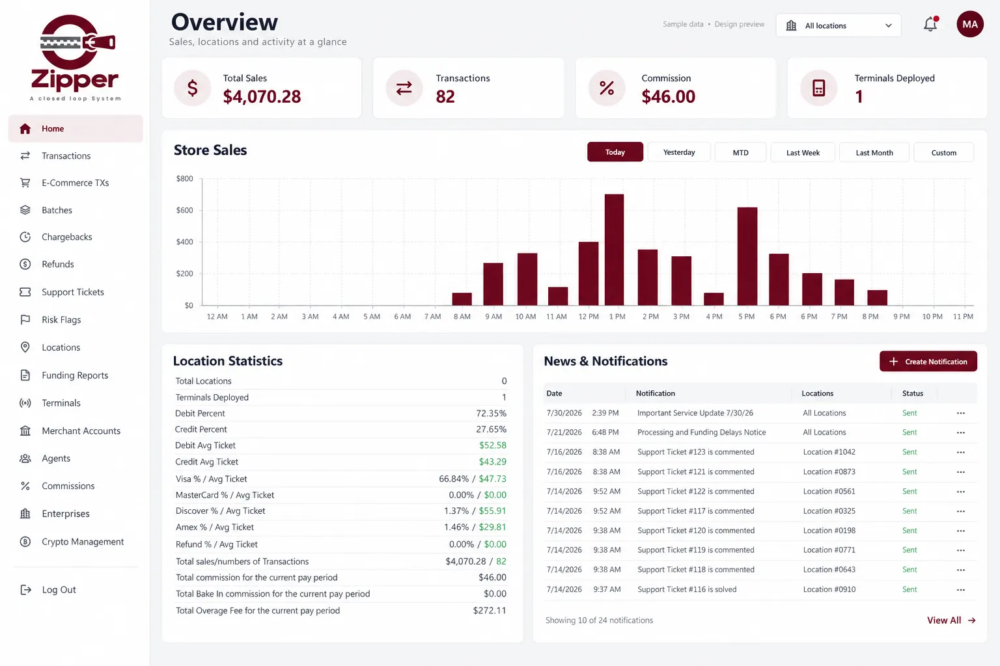
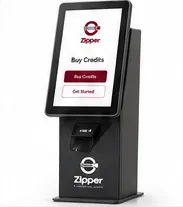
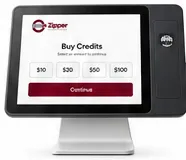

Choose your amount
Select the amount you want to purchase at the kiosk.

CONNECTED COMMERCE. SIMPLIFIED.
Zipper brings kiosk solutions and transaction management together, helping you run your store with a clearer view of your business.

HOW IT WORKS
Select the amount you want to purchase at the kiosk.
Follow the payment instructions on the kiosk or terminal.
Review your confirmation when the transaction is complete.
TRANSACTION MANAGEMENT
Monitor sales, review transactions and explore location activity from one organized portal.
Explore the Demo Portal →Interactive preview with sample data.

OUR KIOSKS

A dedicated, self-service format for your store. Explore the setup that suits your space.

A compact format for stores with limited counter space. Keep the customer experience close at hand.
SUPPORT
A standalone kiosk provides a dedicated customer purchase point. A countertop terminal uses existing counter space. Contact the team to confirm hardware dimensions and installation requirements.
Explore sales charts, transactions, location activity and notifications in the demo portal. Live features depend on your existing platform integration.
Use the inquiry form below to describe your store and preferred kiosk. This preview saves inquiries in your browser; it does not send them to a service team.
This is a design approval website. Portal activity uses sample data. No payment is processed and no financial account is connected.
GET STARTED
Tell us about your store and the solution you’re interested in.
Demo form: inquiries are saved on this browser, not emailed.